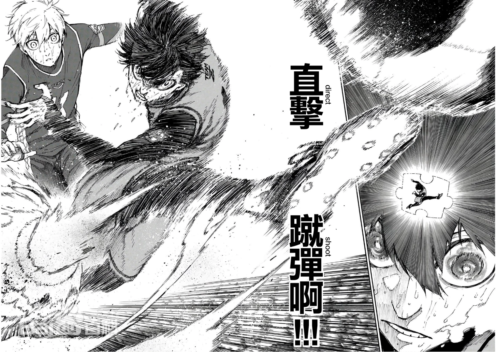

日本漫画《蓝色监狱》及其衍生作品中的主角
洁世一，日本漫画《蓝色监狱》及其衍生作品中的主角 [1-2]。
身份背景
一难高中二年级学生，作为前锋却在全国足球竞赛埼玉县赛区决赛中，错失决定性的
一球而与全国比赛失之交臂。这时候，被邀请参与了由绘心甚八所主持的，旨在“进行创
造世界第一前锋的实验”的“蓝色监狱”项目。参与此项目的总共有300名18岁以下的优秀的
前锋们，通过考验即可成为日本代表参与世界级的比赛，淘汰则再也不能入选日本国家
队。赌上了自己的前途和人生，洁想通过层层选拔最终走向梦想中的世界第一前锋的位置。
外形
深蓝色眼睛，深蓝色短发，头上的两根呆毛形如刚刚发芽的小草。身高175cm。
衣着
除了第一话以外，训练时基本上身着“Blue Lock”中发放的深蓝色装有传感器的训练
服，比赛时则是根据对阵穿不同颜色的球衣。球衣号码通常为11号，但是在进行一次选拔
和二次选拔时也穿过5号和15号。
性格
沉着冷静，善于思考，但是也有内心存在着“怪物”的一面。场上和场下性格有反差，
场上经常爆发出令人难以想象的能力，有时候会很强势（官方设定有抖s的一面），场下
温和谦让很有礼貌很乖。逆境中十分坚强，会不断地让自己的才能开花结果。
以下皆来自官方推特与作者的问答 [1]。
开始踢足球的年龄：4岁
喜欢的食物：金锷烧
喜欢的动物：龙虾！大概是喜欢它的外形
喜欢的颜色：淡蓝色
喜欢的季节：秋天吧，稍微变冷之后有点冷清这点让人很喜欢
喜欢的类型：经常露出笑脸和笑容很棒的人吧
兴奋点：大腿之类的或许会让人有点心动，但应该是耳朵吧......！！
会因为别人做什么感到高兴：大概是被夸奖的时候……啊！还有如果得到甜食的话会很开心
擅长的科目和不擅长的科目：擅长的是体育和美术，而数学和理科就……完全不行！
从圣诞老人那里得到礼物到几岁为止：小6
洗澡时从哪里开始：头，因为父亲曾教导说从上面开始洗比较好
自认为的优点和缺点：善于发现其他人的优点吧，不过，对他人的脸色观察过头大概就是缺点了
最近为之哭泣的事情：县大会输了很不甘心……！
中了一亿日元会做什么：交给双亲……！因为我不太清楚要做些什么......
今年得到的巧克力数：0
会在便利店顺便买下的东西：软糖！有点酸的那种！现在都光是纳豆和味增汤......
度过假日的方式：足球游戏、看漫画，想事的时候会散步
最后一次在圣诞节向圣诞老人许愿了什么：PS4
会在世界末日时做什么：准备好金锷烧，再沏上美味的茶悠闲地享用吧
人物关系
| 关系 | 任务名称 |
|---|---|
| 第一次选拔队友 | 蜂乐回、千切豹马、国神炼介、我牙丸吟、成早朝日、雷市阵吾、 今村游大、久远涉、伊右卫门送人、五十岚栗梦（队伍Z） |
| 第二次选拔队友 | 蜂乐回、凪诚士郎（第一场） 凪诚士郎（第二场） 凪诚士郎、马狼照英（第三场） 凪诚士郎、马狼照英、千切豹马（第四场） |
| 世界选手评估赛队友 | 糸师凛、蜂乐回、蚁生十兵卫、时光青志 |
| 第三次选拔队友 | 糸师凛、士道龙圣、冰织羊、七星虹郎 |
| 蓝色监狱十一杰 | 糸师凛、我牙丸吟、二子一挥、蚁生十兵卫、蜂乐回、千切豹马、 乌旅人、乙夜影汰、雪宫剑优、凪诚士郎、洁世一 |
综合评价
洁世一在个人的力量、停球、高度以及控球精度方面的能力并不突出，比较优秀的则是空间认知能力以及直接射门的能力。
但是冷静的头脑和积极的思考让他成为“适应性的天才”从而在比赛中不断进步。
空间认知能力
队友千切豹马的评语：大多数的选手仅是依照自己的视野所及来判断状况从而进行比赛的，像是疾驰的时候或是运球的时
候，那份视野就会变得狭窄。但你有时会像是把握了球场的一切那样，在某一瞬间以惊人的视野进行比赛。要比喻的话，就像是
从空中俯瞰的神的视角一样。我想这份能力能够令你感受到“进球的预感”从而免于陷入困境，同时也能够催生出谁都预想不到的射门。
直击蹴弹
是指不停球直接射门的技术。
洁世一自我分析：我察觉到即便能够凭借“空间认知能力”预读战况，身处球门前若要停球就会产生让敌人得以做出反应的那
份多余的时间。因此我凭借预读得以占得先机的那个瞬间就会化为乌有。然后当我回忆起自己进过的球时，便理解了我迄今为止
进的球全部都是“直接射门”。基于空间认知能力的跑位X直接射门=洁世一进球的方程式！
Flow（心流）
指“凝神于挑战感”的投入状态。
绘心甚八教练语：Flow，那即是人类结合自身“最恰切的经验”所迈向的精神的“热衷状态”。人类会陷入沉浸于某事甚至于忘
记时间流逝的忘我时刻，享受这种行为，大脑处于兴奋状态，这就是“心流”。在他人眼中奇迹般的一球，正是因为各个“心流”而生。
不过这也并非轻而易举之事，目前洁还不能主动进入“忘我”之境。